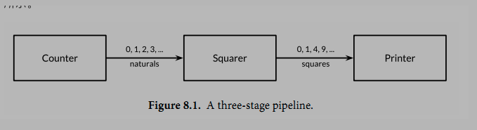
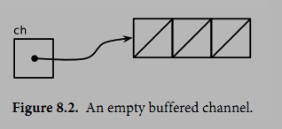
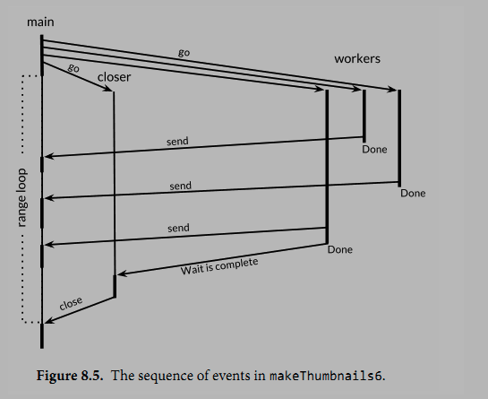

8.1 Goroutines
在Go语言中，每一个并发的执行单元叫作一个goroutine。设想这里的一个程序有两个函数，一个函数做计算，另一个输出结果，假设两个函数没有相互之间的调用关系。一个线性的程序会先调用其中的一个函数，然后再调用另一个。如果程序中包含多个goroutine，对两个函数的调用则可能发生在同一时刻。马上就会看到这样的一个程序。
如果你使用过操作系统或者其它语言提供的线程，那么你可以简单地把goroutine类比作一个线程，这样你就可以写出一些正确的程序了。goroutine和线程的本质区别会在9.8节中讲。
当一个程序启动时，其主函数即在一个单独的goroutine中运行，我们叫它main goroutine。新的goroutine会用go语句来创建。在语法上，go语句是一个普通的函数或方法调用前加上关键字go。
go语句会使其语句中的函数在一个新创建的goroutine中运行。而go语句本身会迅速地完成。
package main
import (
"fmt"
"time"
)
func main(){
// 与main goroutine 同时执行，主goroutine结束它也跟着结束了
go spinner(time.Millisecond * 100)
const n = 45
fibN := fib(n)
fmt.Printf("fib(%d): %d\n",n , fibN)
}
// 打印等待的图标
func spinner(delay time.Duration){
for {
for _, r := range `-\|/`{
fmt.Printf("\r%c", r)
time.Sleep(delay)
}
}
}
// 计算斐波那契数列第n个值
func fib(x int) int{
if x < 2{
return x
}
return fib(x-1) + fib(x-2)
}
主函数返回时，所有的goroutine都会被直接打断，程序退出。
❗️除了从主函数退出或者直接终止程序之外，没有其它的编程方法能够让一个goroutine来打断另一个的执行。
❗️但是之后可以看到一种方式来实现这个目的，通过goroutine之间的通信来让一个goroutine请求其它的goroutine，并让被请求的goroutine自行结束执行。
8.2 示例:并发的clock服务(🌛待填坑)
...
8.3 示例:并发的echo服务(🌛待填坑)
...
8.4✨ Channels
如果说goroutine是Go语言程序的并发体的话，那么channels则是它们之间的通信机制。
一个channel是一个通信机制，它可以让一个goroutine通过它给另一个goroutine发送值信息。
每个channel都有一个特殊的类型，也就是channels可发送数据的类型。
一个可以发送string类型数据的channel一般写为chan string。
创建channel
ch := make(chan string)
channel的类型及比较
和map类似，channel也对应一个make创建的底层数据结构的引用。
❗️当我们复制一个channel或用于函数参数传递时，我们只是拷贝了一个channel引用，因此调用者和被调用者将引用同一个channel对象。
和其它的引用类型一样，channel的零值也是nil。
两个相同类型的channel可以使用==运算符比较。如果两个channel引用的是相同的对象，那么比较的结果为真。一个channel也可以和nil进行比较。
channel的发送与接收
一个channel有发送和接受两个主要操作，都是通信行为。
一个发送语句将一个值从一个goroutine通过channel发送到另一个执行接收操作的goroutine。
发送和接收两个操作都使用<-运算符。
在发送语句中，<-运算符分割channel和要发送的值。
在接收语句中，<-运算符写在channel对象之前。
一个不使用接收结果的接收操作也是合法的。
ch <- x // a send statement
x = <-ch // a receive expression in an assignment statement
<-ch // a receive statement; result is discarded(丢弃)
关闭channel
Channel还支持close操作，用于关闭channel，随后对基于该channel的任何发送操作都将导致panic异常。
对一个已经被close过的channel进行接收操作依然可以接受到之前已经成功发送的数据；
如果channel中已经没有数据的话将产生一个零值的数据。
使用内置的close函数就可以关闭一个channel：
close(ch)
buffered与unbuffered channel
以最简单方式调用make函数创建的是一个无缓存的channel，但是我们也可以指定第二个整型参数，对应channel的容量。如果channel的容量大于零，那么该channel就是带缓存的channel。
ch = make(chan int) // unbuffered channel
ch = make(chan int, 0) // unbuffered channel
ch = make(chan int, 3) // buffered channel with capacity 3
8.4.1 不带缓存的channel
重要特性
❗️一个基于无缓存Channels的发送操作将导致发送者goroutine阻塞，直到另一个goroutine在相同的Channels上执行接收操作，当发送的值通过Channels成功传输之后，两个goroutine可以继续执行后面的语句。反之，如果接收操作先发生，那么接收者goroutine也将阻塞，直到有另一个goroutine在相同的Channels上执行发送操作。
基于无缓存Channels的发送和接收操作将导致两个goroutine做一次同步操作。因为这个原因，无缓存Channels有时候也被称为同步Channels。
当通过一个无缓存Channels发送数据时，接收者收到数据发生在再次唤醒发送者goroutine之前（译注：happens before，这是Go语言并发内存模型的一个关键术语！）。
happens before
在讨论并发编程时，当我们说x事件在y事件之前发生（happens before），我们并不是说x事件在时间上比y时间更早；我们要表达的意思是要保证在此之前的事件都已经完成了，例如在此之前的更新某些变量的操作已经完成，你可以放心依赖这些已完成的事件了。
当我们说x事件既不是在y事件之前发生也不是在y事件之后发生，我们就说x事件和y事件是并发的。这并不是意味着x事件和y事件就一定是同时发生的，我们只是不能确定这两个事件发生的先后顺序。
在下一章中我们将看到，当两个goroutine并发访问了相同的变量时，我们有必要保证某些事件的执行顺序，以避免出现某些并发问题。
同步channel的示例
在8.3节的客户端程序，它在主goroutine中（译注：就是执行main函数的goroutine）将标准输入复制到server，因此当客户端程序关闭标准输入时，后台goroutine可能依然在工作。我们需要让主goroutine等待后台goroutine完成工作后再退出，我们使用了一个channel来同步两个goroutine：
package main
import (
"log"
)
func main() {
// 定义一个无缓存的channel
done := make(chan string)
// 子goroutine
go func(){
log.Println("son goroutine has done...")
// send
done <- "fucking done!" // signal the main goroutine
}()
// 下面的打印语句与子goroutine同时执行！
log.Println("main goroutine1.....")
<- done // 等待后台子goroutine执行完才执行下面的打印语句！
log.Println("main goroutine2.....")
}
基于channels发送消息有两个重要方面。首先每个消息都有一个值，但是有时候通讯的事实和发生的时刻也同样重要。
当我们更希望强调通讯发生的时刻时，我们将它称为消息事件。
有些消息事件并不携带额外的信息，它仅仅是用作两个goroutine之间的同步，这时候我们可以用struct{}空结构体作为channels元素的类型，虽然也可以使用bool或int类型实现同样的功能，done <- 1语句也比done <- struct{}{}更短。
8.4.2 串联的channel(pipeline)
Channels也可以用于将多个goroutine连接在一起，一个Channel的输出作为下一个Channel的输入。这种串联的Channels就是所谓的管道（pipeline）。下面的程序用两个channels将三个goroutine串联起来：

第一个goroutine是一个计数器，用于生成0、1、2、……形式的整数序列，然后通过channel将该整数序列发送给第二个goroutine；第二个goroutine是一个求平方的程序，对收到的每个整数求平方，然后将平方后的结果通过第二个channel发送给第三个goroutine；第三个goroutine是一个打印程序，打印收到的每个整数。为了保持例子清晰，我们有意选择了非常简单的函数，当然三个goroutine的计算很简单，在现实中确实没有必要为如此简单的运算构建三个goroutine：
package main
import "fmt"
func main() {
naturals := make(chan int)
squares := make(chan int)
// Counter
go func(){
// 无限往里面加
for x := 0; ; x++{
naturals <- x
}
}()
// Squarer
go func(){
for {
x := <- naturals
squares <- x * x
}
}()
// Printer
for{
y := <- squares
// 限制...
if y > 10000{
// 关闭
close(naturals)
close(squares)
fmt.Println(y)
return
}
fmt.Println(y)
}
}
❗️当一个channel被关闭后，再向该channel发送数据将导致panic异常。
❗️当一个被关闭的channel中已经发送的数据都被成功接收后，后续的接收操作将不再阻塞，它们会立即返回一个零值。
关闭上面例子中的naturals变量对应的channel并不能终止循环，它依然会收到一个永无休止的零值序列，然后将它们发送给打印者goroutine。
接收操作的变体
没有办法直接测试一个channel是否被关闭，但是接收操作有一个变体形式：它多接收一个结果，多接收的第二个结果是一个布尔值ok，ture表示成功从channels接收到值，false表示channels已经被关闭并且里面没有值可接收。
使用这个特性，我们可以修改squarer函数中的循环代码，当naturals对应的channel被关闭并没有值可接收时跳出循环，并且也关闭squares对应的channel.
// Squarer
go func(){
for {
x, ok := <- naturals
if !ok{
break // channel was closed and drained
}
squares <- x * x
}
close(squares)
}()
使用range接收❗️
因为上面的语法是笨拙的，而且这种处理模式很常见，因此Go语言的range循环可直接在channels上面迭代。
使用range循环是上面处理模式的简洁语法，它依次从channel接收数据，当channel被关闭并且没有值可接收时跳出循环。
package main
import "fmt"
func main() {
naturals := make(chan int)
squares := make(chan int)
// Counter
go func(){
// 100个
for x := 0; x<100; x++{
naturals <- x
}
// close
close(naturals)
}()
// Squarer
go func(){
// for ... range 的方式
for x := range naturals{
squares <- x * x
}
// close
close(squares)
}()
// Printer 主goroutine中
for x := range squares{
fmt.Println("x: ", x)
}
}
重要概念
❗️其实你并不需要关闭每一个channel。只有当需要告诉接收者goroutine，所有的数据已经全部发送时才需要关闭channel。
❗️不管一个channel是否被关闭，当它没有被引用时将会被Go语言的垃圾自动回收器回收。
不要将关闭一个打开文件的操作和关闭一个channel操作混淆。对于每个打开的文件，都需要在不使用的时候调用对应的Close方法来关闭文件。
试图重复关闭一个channel将导致panic异常，试图关闭一个nil值的channel也将导致panic异常。关闭一个channels还会触发一个广播机制。
8.4.3 单方向的channel 😓
❗️注意：“发送send”与“接收receive”是外部环境相对于channel而言的！（与之相类似的概念是IO：in是往内存中写入数据，out是从内存中读取数据～）
❗️只发送send-only的含义是：只能往channel中发送数据！也就是说这个channel只能从外面接收数据！
❗️只接送receive-only的含义是：只能从channel中接收数据！也就是说这个channel只能往外面发送数据！
上面的功能可以拆分成3个函数：
func counter(out chan int)
func squarer(out, in chan int)
func printer(in chan int)
现在的需求是要区分哪些channel是只能接收，哪些channel只能发送的！
为了表明这种意图并防止被滥用，Go语言的类型系统提供了单方向的channel类型，分别用于只发送或只接收的channel。
类型chan<- int表示一个只发送int的channel，只能发送不能接收。
相反，类型<-chan int表示一个只接收int的channel，只能接收不能发送。close一个只接收的channel会在编译时报错！
箭头<-和关键字chan的相对位置表明了channel的方向。这种限制将在编译期检测。
❗️因为关闭操作只用于断言不再向channel发送新的数据，所以只有在发送者所在的goroutine才会调用close函数，因此对一个只接收的channel调用close将是一个编译错误。
上面程序可以用单方向的channel做一下优化：
package main
import "fmt"
func main() {
// 默认是双向的channel
naturals := make(chan int)
squares := make(chan int)
// 隐式的将naturals转换为 chan<- int
go counter(naturals)
// 隐式的将squares转换为 <-chan int
go square(squares, naturals)
// main goroutine
Printer(squares)
}
// Counter
func counter(out chan<- int){
for x := 0; x <= 100; x++{
out <- x
}
close(out)
}
// Square
func square(out chan<- int, in <-chan int){
for v := range in{
out <- v * v
}
close(out)
}
// Printer
func Printer(in <-chan int){
for v := range in{
fmt.Println("v: ", v)
}
}
调用counter（naturals）时，naturals的类型将隐式地从chan int转换成chan<- int。
调用printer(squares)也会导致相似的隐式转换，这一次是转换为<-chan int类型只接收型的channel。
❗️任何双向channel向单向channel变量的赋值操作都将导致该隐式转换。
❗️这里并没有反向转换的语法：也就是不能将一个类似chan<- int类型的单向型的channel转换为chan int类型的双向型的channel。
8.4.4 带缓存的channel
带缓存的Channel内部持有一个元素队列。
队列的最大容量是在调用make函数创建channel时通过第二个参数指定的。
下面的语句创建了一个可以持有三个字符串元素的带缓存Channel。
图8.2是ch变量对应的channel的图形表示形式：

向缓存Channel的发送操作就是向内部缓存队列的尾部插入元素，接收操作则是从队列的头部删除元素。
如果内部缓存队列是满的，那么发送操作将阻塞直到因另一个goroutine执行接收操作而释放了新的队列空间。
相反，如果channel是空的，接收操作将阻塞直到有另一个goroutine执行发送操作而向队列插入元素。
ch <- "A"
ch <- "B"
ch <- "C"
此刻，channel的内部缓存队列将是满的（图8.3），如果有第四个发送操作将发生阻塞。
如果我们接收一个值，
fmt.Println(<-ch) // "A"
那么channel的缓存队列将不是满的也不是空的，因此对该channel执行的发送或接收操作都不会发生阻塞。
通过这种方式，channel的缓存队列解耦了接收和发送的goroutine。
cap获取缓存容量
在某些特殊情况下，程序可能需要知道channel内部缓存的容量，可以用内置的cap函数获取：
fmt.Println(cap(ch)) // "3"
len获取有效元素个数
同样，对于内置的len函数，如果传入的是channel，那么将返回channel内部缓存队列中有效元素的个数。因为在并发程序中该信息会随着接收操作而失效，但是它对某些故障诊断和性能优化会有帮助。
fmt.Println(len(ch)) // "2"
完整案例及说明
在继续执行两次接收操作后channel内部的缓存队列将又成为空的，如果有第四个接收操作将发生阻塞：
fmt.Println(<-ch) // "B"
fmt.Println(<-ch) // "C"
package main
import "fmt"
func main() {
ch := make(chan string, 3)
ch <- "A"
ch <- "B"
ch <- "C"
fmt.Println("1: ", <-ch) // A
// cap
fmt.Println("cap: ", cap(ch)) // 3
// len
fmt.Println("len: ", len(ch)) // 2
fmt.Println("> ", <-ch) // B
fmt.Println("> ", <-ch) // C
// 取完后再取会报错！all goroutines are asleep
// fmt.Println("> ", <-ch)
}
在这个例子中，发送和接收操作都发生在同一个goroutine中，但是在真实的程序中它们一般由不同的goroutine执行。
❗️Go语言新手有时候会将一个带缓存的channel当作同一个goroutine中的队列使用，虽然语法看似简单，但实际上这是一个错误。
❗️Channel和goroutine的调度器机制是紧密相连的，如果没有其他goroutine从channel接收，发送者——或许是整个程序——将会面临永远阻塞的风险。如果你只是需要一个简单的队列，使用slice就可以了。
带缓存的channel案例
下面的例子展示了一个使用了带缓存channel的应用。它并发地向三个镜像站点发出请求，三个镜像站点分散在不同的地理位置。它们分别将收到的响应发送到带缓存channel，最后接收者只接收第一个收到的响应，也就是最快的那个响应——因此mirroredQuery函数可能在另外两个响应慢的镜像站点响应之前就返回了结果。
❗️顺便说一下，多个goroutines并发地向同一个channel发送数据，或从同一个channel接收数据都是常见的用法。
package main
import "fmt"
func main() {
s := mirroredQuery()
fmt.Println("s: ", s)
}
func mirroredQuery() string {
responses := make(chan string, 3)
go func() { responses <- request("www.gopl1.io") }()
go func() { responses <- request("www.gopl2.io") }()
go func() { responses <- request("www.gopl3.io") }()
return <-responses // // return the quickest response
}
func request(hostname string) (response string) {
return hostname
}
❗️如果我们使用了无缓存的channel，那么两个慢的goroutines将会因为没有人接收而被永远卡住。这种情况，称为goroutines泄漏，这将是一个BUG。和垃圾变量不同，泄漏的goroutines并不会被自动回收，因此确保每个不再需要的goroutine能正常退出是重要的。
❗️buffered与unbuffered之间的选择
关于无缓存或带缓存channels之间的选择，或者是带缓存channels的容量大小的选择，都可能影响程序的正确性。
无缓存channel更强地保证了每个发送操作与相应的同步接收操作；但是对于带缓存channel，这些操作是解耦的。
同样，即使我们知道将要发送到一个channel的信息的数量上限，创建一个对应容量大小的带缓存channel也是不现实的，因为这要求在执行任何接收操作之前缓存所有已经发送的值。如果未能分配足够的缓存将导致程序死锁。
Channel的缓存也可能影响程序的性能。想象一家蛋糕店有三个厨师，一个烘焙，一个上糖衣，还有一个将每个蛋糕传递到它下一个厨师的生产线。在狭小的厨房空间环境，每个厨师在完成蛋糕后必须等待下一个厨师已经准备好接受它；这类似于在一个无缓存的channel上进行沟通。
如果在每个厨师之间有一个放置一个蛋糕的额外空间，那么每个厨师就可以将一个完成的蛋糕临时放在那里而马上进入下一个蛋糕的制作中；这类似于将channel的缓存队列的容量设置为1。只要每个厨师的平均工作效率相近，那么其中大部分的传输工作将是迅速的，个体之间细小的效率差异将在交接过程中弥补。如果厨师之间有更大的额外空间——也是就更大容量的缓存队列——将可以在不停止生产线的前提下消除更大的效率波动，例如一个厨师可以短暂地休息，然后再加快赶上进度而不影响其他人。
另一方面，如果生产线的前期阶段一直快于后续阶段，那么它们之间的缓存在大部分时间都将是满的。相反，如果后续阶段比前期阶段更快，那么它们之间的缓存在大部分时间都将是空的。对于这类场景，额外的缓存并没有带来任何好处。
生产线的隐喻对于理解channels和goroutines的工作机制是很有帮助的。例如，如果第二阶段是需要精心制作的复杂操作，一个厨师可能无法跟上第一个厨师的进度，或者是无法满足第三阶段厨师的需求。要解决这个问题，我们可以再雇佣另一个厨师来帮助完成第二阶段的工作，他执行相同的任务但是独立工作。这类似于基于相同的channels创建另一个独立的goroutine。
✅ 模拟蛋糕店程序
（源码中ch8/cake）还有测试用例......❗️（待补充）
8.5✨ 并发的循环
本节主要探索一些用来在并行时循环迭代的常见并发模型。
原始的循环程序
package main
import "log"
func main() {
fileNames := []string{"aaa", "bbb", "ccc"}
makeThumbnails(fileNames)
}
func ImageFile(infile string) (string, error) {
// 文件IO
return infile + "/", nil
}
func makeThumbnails(filenames []string) {
for _, f := range filenames {
if _, err := ImageFile(f); err != nil {
log.Println("err: ", err)
}
}
}
粗暴的版本
先隐藏掉错误：
// NOTE: incorrect!
func makeThumbnails2(filenames []string) {
for _, f := range filenames {
go ImageFile(f) // NOTE: ignoring errors
}
}
这个版本运行的实在有点太快，实际上，由于它比最早的版本使用的时间要短得多，即使当文件名的slice中只包含有一个元素。这就有点奇怪了，如果程序没有并发执行的话，那为什么一个并发的版本还是要快呢？
答案其实是makeThumbnails在它还没有完成工作之前就已经返回了。它启动了所有的goroutine，每一个文件名对应一个，但没有等待它们一直到执行完毕。
等待goroutine完成的版本
❗️没有什么直接的办法能够等待goroutine完成，但是我们可以改变goroutine里的代码让其能够将完成情况报告给外部的goroutine知晓，使用的方式是向一个共享的channel中发送事件。因为我们已经确切地知道有len(filenames)个内部goroutine，所以外部的goroutine只需要在返回之前对这些事件计数。
func makeThumbnails3(filenames []string) {
// 创建一个无缓存的channel
ch := make(chan struct{})
for _, f := range filenames {
// 在这里使用并发
go func(f string) {
thumbnail.ImageFile(f) // NOTE: ignoring errors
ch <- struct{}{}
}(f)
}
// Wait for goroutines to complete.
for range filenames {
<-ch
}
}
这里需要注意一个问题：❗️匿名函数中的循环变量快照问题。上面这个单独的变量f是被所有的匿名函数值所共享，且会被连续的循环迭代所更新的。当新的goroutine开始执行字面函数时，for循环可能已经更新了f并且开始了另一轮的迭代或者（更有可能的）已经结束了整个循环，所以当这些goroutine开始读取f的值时，它们所看到的值已经是slice的最后一个元素了。显式地添加这个参数，我们能够确保使用的f是当go语句执行时的“当前”那个f。
❗️不可以像这样写——“循环变量快照”问题：
package gos
import (
"fmt"
"testing"
)
func TestTs(t *testing.T){
lis := []int{1,2,5}
for _, i := range lis{
go func(){
// 如果匿名函数中没有任何参数，i是被所有匿名函数共享的！这样i会是最后一个值
fmt.Println("a: ", i)
}()
}
}
/*
结果（因为没有做waitGroup，所以打印的个数不确定！）：
a: 5
a: 5
a: 5
*/
往主goroutine中返回值的版本
如果我们想要从每一个worker goroutine往主goroutine中返回值时该怎么办呢？
当我们调用ImageFile创建文件失败的时候，它会返回一个错误。下一个版本的makeThumbnails会返回其在做拉伸操作时接收到的第一个错误：
func makeThumbnails4(filenames []string) error {
// 接收错误的channel
errors := make(chan error)
for _, f := range filenames {
go func(f string) {
// 有错误就放进去
_, err := ImageFile(f)
errors <- err
}(f)
}
for range filenames {
// 只返回第一个错误！（channel是一个队列 —— 先进先出）
if err := <-errors; err != nil {
return err // NOTE: incorrect: goroutine leak!
}
}
return nil
}
❗️这个程序有一个微妙的bug：当它遇到第一个非nil的error时会直接将error返回到调用方，使得没有一个goroutine去排空errors channel。
❗️这样剩下的worker goroutine在向这个channel中发送值时，都会永远地阻塞下去，并且永远都不会退出。这种情况叫做goroutine泄露（§8.4.4），可能会导致整个程序卡住或者跑出out of memory的错误。
使用buffered channel解决上面问题的版本
最简单的解决办法就是用一个具有合适大小的buffered channel，这样这些worker goroutine向channel中发送错误时就不会被阻塞。
一个可选的解决办法是创建一个另外的goroutine，当main goroutine返回第一个错误的同时去排空channel。
func makeThumbnails5(filenames []string) (thumbfiles []string, err error) {
type item struct {
thumbfile string
err error
}
// “合适的大小” 其实就是 文件列表的大小
ch := make(chan item, len(filenames))
for _, f := range filenames {
go func(f string) {
var it item
it.thumbfile, it.err = thumbnail.ImageFile(f)
ch <- it
}(f)
}
// ***
for range filenames {
it := <-ch
if it.err != nil {
return nil, it.err
}
thumbfiles = append(thumbfiles, it.thumbfile)
}
return thumbfiles, nil
}
最终版本❗️
1 传slice的版本
我们最后一个版本的makeThumbnails返回了新文件们的大小总计数（bytes）。
❗️为了知道最后一个goroutine什么时候结束（最后一个结束并不一定是最后一个开始），我们需要一个递增的计数器，在每一个goroutine启动时加一，在goroutine退出时减一。
这需要一种特殊的计数器，这个计数器需要在多个goroutine操作时做到安全并且提供在其减为零之前一直等待的一种方法。
这种计数类型被称为sync.WaitGroup，下面的代码就用到了这种方法：
package main
import (
"fmt"
"log"
"os"
"sync"
)
func main() {
// 真实文件的绝对路径
files := []string{"/Users/wanghongwei/Downloads/GOLANG_GUIDE/gos/tts_test.go", "/Users/wanghongwei/Downloads/GOLANG_GUIDE/gos/go.mod", "/Users/wanghongwei/Downloads/GOLANG_GUIDE/gos/the_go_programming_language/s8/s841/main.go"}
makeThumbnails6(files)
}
func ImageFile(infile string) (string, error) {
return infile, nil
}
// filenames是receive-only的channel，只能往外面发数据！
func makeThumbnails6(fileNames []string) int64 {
sizes := make(chan int64, cap(fileNames))
fmt.Println("fileNames: ", fileNames, cap(fileNames), len(fileNames))
// waitGroup
var wg sync.WaitGroup
for _, f := range fileNames {
// goroutine之前Add
wg.Add(1)
go func(f string) {
// Done
defer wg.Done()
thumb, err := ImageFile(f)
if err != nil {
// 有err后直接return
log.Println("err: ", err)
return
}
info, _ := os.Stat(thumb) // OK to ignore error
fmt.Println("info: ", info)
// 往channel中放文件的大小
sizes <- info.Size()
//sizes <- 3
}(f)
}
// closer
go func() {
wg.Wait()
close(sizes)
}()
fmt.Println("123123123123")
var total int64
for size := range sizes {
total += size
}
fmt.Println("totalSize: ", total)
return total
}
❗️注意Add和Done方法的不对称。Add是为计数器加一，必须在worker goroutine开始之前调用，而不是在goroutine中；否则的话我们没办法确定Add是在"closer" goroutine调用Wait之前被调用。
并且Add还有一个参数，但Done却没有任何参数；其实它和Add(-1)是等价的。
我们使用defer来确保计数器即使是在出错的情况下依然能够正确地被减掉。
上面的程序代码结构是当我们使用并发循环，但又不知道迭代次数时很通常而且很地道的写法。
❗️sizes channel携带了每一个文件的大小到main goroutine，在main goroutine中使用了range loop来计算总和。观察一下我们是怎样创建一个closer goroutine，并让其在所有worker goroutine们结束之后再关闭sizes channel的。
两步操作：wait和close，必须是基于sizes的循环的并发。
考虑一下另一种方案：如果等待操作被放在了main goroutine中，在循环之前，这样的话就永远都不会结束了，如果在循环之后，那么又变成了不可达的部分，因为没有任何东西去关闭这个channel，这个循环就永远都不会终止。
❗️图8.5 表明了makethumbnails6函数中事件的序列。纵列表示goroutine。窄线段代表sleep，粗线段代表活动。斜线箭头代表用来同步两个goroutine的事件。时间向下流动。注意main goroutine是如何大部分的时间被唤醒执行其range循环，等待worker发送值或者closer来关闭channel的。

2 传channel的版本 ❓
和前面的版本都不一样的一点是我们在这个版本里没有把文件名放在slice里，而是通过一个string的channel传过来，所以我们无法对循环的次数进行预测。
❓这个版本的代码有问题，还需要继续调试：
package main
import (
"fmt"
"log"
"os"
"sync"
)
func main() {
// 真实文件的绝对路径
files := []string{"/Users/wanghongwei/Downloads/GOLANG_GUIDE/gos/tts_test.go", "/Users/wanghongwei/Downloads/GOLANG_GUIDE/gos/go.mod", "/Users/wanghongwei/Downloads/GOLANG_GUIDE/gos/the_go_programming_language/s8/s841/main.go"}
// 设置一个合适的容量
fileNames := make(chan string, len(files))
// TODO 这里也可以用goroutine跑吗？
genFileNames(files, fileNames)
makeThumbnails6(fileNames)
}
func genFileNames(lis []string, fileNames chan string) {
for _, name := range lis {
fileNames <- name
}
}
func ImageFile(infile string) (string, error) {
return infile, nil
}
// filenames是receive-only的channel，只能往外面发数据！
func makeThumbnails6(fileNames chan string) int64 {
sizes := make(chan int64, cap(fileNames))
fmt.Println("fileNames: ", fileNames, cap(fileNames), len(fileNames))
// waitGroup
var wg sync.WaitGroup
for f := range fileNames {
// goroutine之前Add
wg.Add(1)
go func(f string) {
// Done
defer wg.Done()
thumb, err := ImageFile(f)
if err != nil {
// 有err后直接return
log.Println("err: ", err)
return
}
info, _ := os.Stat(thumb) // OK to ignore error
fmt.Println("info: ", info)
// 往channel中放文件的大小
sizes <- info.Size()
//sizes <- 3
}(f)
}
// closer
go func() {
wg.Wait()
close(sizes)
}()
fmt.Println("123123123123")
var total int64
for size := range sizes {
total += size
}
fmt.Println("totalSize: ", total)
return total
}
8.6 示例:并发的web爬虫
同步的爬虫程序
下面是一个简单的web爬虫，用bfs(广度优先)算法来抓取整个网站。
在本节中，我们会让这个爬虫并行化，这样每一个彼此独立的抓取命令可以并行进行IO，最大化利用网络资源。
// gopl.io/ch8/crawl1
func crawl(url string) []string {
fmt.Println(url)
list, err := links.Extract(url)
if err != nil {
log.Print(err)
}
return list
}
使用channel代替slice做队列
这一次我们用channel代替slice来做这个队列。每一个对crawl的调用都会在他们自己的goroutine中进行并且会把他们抓到的链接发送回worklist。
func main() {
worklist := make(chan []string)
// Start with the command-line arguments.
go func() { worklist <- os.Args[1:] }()
// Crawl the web concurrently.
seen := make(map[string]bool)
for list := range worklist {
for _, link := range list {
if !seen[link] {
seen[link] = true
go func(link string) {
worklist <- crawl(link)
}(link)
}
}
}
}
注意这里的crawl所在的goroutine会将link作为一个显式的参数传入，来避免“循环变量快照”的问题。
另外注意这里将命令行参数传入worklist也是在一个另外的goroutine中进行的，这是为了避免channel两端的main goroutine与crawler goroutine都尝试向对方发送内容，却没有一端接收内容时发生死锁。当然，这里我们也可以用buffered channel来解决问题，这里不再赘述。
(1)解决并发量太大的问题
这个程序实在是太#@并行了。
无穷无尽地并行化并不是什么好事情，因为不管怎么说，你的系统总是会有一些个限制因素，比如CPU核心数会限制你的计算负载，比如你的硬盘转轴和磁头数限制了你的本地磁盘IO操作频率，比如你的网络带宽限制了你的下载速度上限，或者是你的一个web服务的服务容量上限等等。
为了解决这个问题，我们可以限制并发程序所使用的资源来使之适应自己的运行环境。
对于我们的例子来说，最简单的方法就是限制对links.Extract在同一时间最多不会有超过n次调用，这里的n一般小于文件描述符的上限值，比如20。这和一个夜店里限制客人数目是一个道理，只有当有客人离开时，才会允许新的客人进入店内。
❗️我们可以用一个有容量限制的buffered channel来控制并发，这类似于操作系统里的计数信号量概念。从概念上讲，channel里的n个空槽代表n个可以处理内容的token（通行证），从channel里接收一个值会释放其中的一个token，并且生成一个新的空槽位。这样保证了在没有接收介入时最多有n个发送操作。（这里可能我们拿channel里填充的槽来做token更直观一些，不过还是这样吧。）由于channel里的元素类型并不重要，我们用一个零值的struct{}来作为其元素。
// tokens is a counting semaphore used to
// enforce a limit of 20 concurrent requests.
var tokens = make(chan struct{}, 20)
func crawl(url string) []string {
fmt.Println(url)
tokens <- struct{}{} // acquire a token
list, err := links.Extract(url)
<-tokens // release the token
if err != nil {
log.Print(err)
}
return list
}
(2)解决程序不会终止问题
第二个问题是这个程序永远都不会终止，即使它已经爬到了所有初始链接衍生出的链接。（当然，除非你慎重地选择了合适的初始化URL或者已经实现了练习8.6中的深度限制，你应该还没有意识到这个问题。）为了使这个程序能够终止，我们需要在worklist为空或者没有crawl的goroutine在运行时退出主循环。
func main() {
worklist := make(chan []string)
var n int // number of pending sends to worklist
// Start with the command-line arguments.
n++
go func() { worklist <- os.Args[1:] }()
// Crawl the web concurrently.
seen := make(map[string]bool)
for ; n > 0; n-- {
list := <-worklist
for _, link := range list {
if !seen[link] {
seen[link] = true
n++
go func(link string) {
worklist <- crawl(link)
}(link)
}
}
}
}
这个版本中，计数器n对worklist的发送操作数量进行了限制。每一次我们发现有元素需要被发送到worklist时，我们都会对n进行++操作，在向worklist中发送初始的命令行参数之前，我们也进行过一次++操作。这里的操作++是在每启动一个crawler的goroutine之前。主循环会在n减为0时终止，这时候说明没活可干了。
现在这个并发爬虫会比5.6节中的深度优先搜索版快上20倍，而且不会出什么错，并且在其完成任务时也会正确地终止。
(3)解决过度并发的另外一个思路
下面的程序是避免过度并发的另一种思路。这个版本使用了原来的crawl函数，但没有使用计数信号量，取而代之用了20个常驻的crawler goroutine，这样来保证最多20个HTTP请求在并发：
func main() {
worklist := make(chan []string) // lists of URLs, may have duplicates
unseenLinks := make(chan string) // de-duplicated URLs
// Add command-line arguments to worklist.
go func() { worklist <- os.Args[1:] }()
// Create 20 crawler goroutines to fetch each unseen link.
for i := 0; i < 20; i++ {
go func() {
for link := range unseenLinks {
foundLinks := crawl(link)
go func() { worklist <- foundLinks }()
}
}()
}
// The main goroutine de-duplicates worklist items
// and sends the unseen ones to the crawlers.
seen := make(map[string]bool)
for list := range worklist {
for _, link := range list {
if !seen[link] {
seen[link] = true
unseenLinks <- link
}
}
}
}
所有的爬虫goroutine现在都是被同一个channel - unseenLinks喂饱的了。主goroutine负责拆分它从worklist里拿到的元素，然后把没有抓过的经由unseenLinks channel发送给一个爬虫的goroutine。
seen这个map被限定在main goroutine中；也就是说这个map只能在main goroutine中进行访问。类似于其它的信息隐藏方式，这样的约束可以让我们从一定程度上保证程序的正确性。例如，内部变量不能够在函数外部被访问到；变量（§2.3.4）在没有发生变量逃逸（译注：局部变量被全局变量引用地址导致变量被分配在堆上）的情况下是无法在函数外部访问的；一个对象的封装字段无法被该对象的方法以外的方法访问到。在所有的情况下，信息隐藏都可以帮助我们约束我们的程序，使其不发生意料之外的情况。
crawl函数爬到的链接在一个专有的goroutine中被发送到worklist中来避免死锁。为了节省篇幅，这个例子的终止问题我们先不进行详细阐述了。
(4)解决过度并发的终极思路❗️
之前自己总结过一篇博客：Go控制协裎并发数量的用法及实际中的一个案例❗️
8.7✨ 基于select的多路复用
基本的倒计时程序
“火箭发射倒计时”程序～time.Tick函数返回一个channel，程序会周期性地像一个节拍器一样向这个channel发送事件。每一个事件的值是一个时间戳，不过更有意思的是其传送方式：
❗️效果：程序会每隔一秒打印：countdown: (10~1)，最后打印Lift off！
package main
import (
"fmt"
"time"
)
// 效果：程序会每隔一秒打印：countdown: (10~1)，最后打印Lift off！
func main() {
fmt.Println("-----------------------")
tick := time.Tick(1 * time.Second)
for countdown := 10; countdown > 0; countdown-- {
fmt.Println("countdown: ", countdown)
<- tick
}
launch()
}
func launch() {
fmt.Println("Lift off!")
}
支持中断流程引出select多路复用
现在我们让这个程序支持在倒计时中，用户按下return键时直接中断发射流程。
首先，我们启动一个goroutine，这个goroutine会尝试从标准输入中读入一个单独的byte并且，如果成功了，会向名为abort的channel发送一个值。
abort := make(chan struct{})
go func() {
os.Stdin.Read(make([]byte, 1)) // read a single byte
abort <- struct{}{}
}()
现在每一次计数循环的迭代都需要等待两个channel中的其中一个返回事件了：当一切正常时的ticker channel或者异常时返回的abort事件。我们无法做到从每一个channel中接收信息，如果我们这么做的话，如果第一个channel中没有事件发过来那么程序就会立刻被阻塞，这样我们就无法收到第二个channel中发过来的事件。
select语句
这时候我们需要多路复用（multiplex）这些操作了，为了能够多路复用，我们使用了select语句。
select {
case <-ch1:
// ...
case x := <-ch2:
// ...use x...
case ch3 <- y:
// ...
default:
// ...
}
上面是select语句的一般形式。和switch语句稍微有点相似，也会有几个case和最后的default选择分支。
❗️每一个case代表一个通信操作（在某个channel上进行发送或者接收），并且会包含一些语句组成的一个语句块。
一个接收表达式可能只包含接收表达式自身（译注：不把接收到的值赋值给变量什么的），就像上面的第一个case，或者包含在一个简短的变量声明中，像第二个case里一样；第二种形式让你能够引用接收到的值。
select会等待case中有能够执行的case时去执行。当条件满足时，select才会去通信并执行case之后的语句；这时候其它通信是不会执行的。一个没有任何case的select语句写作select{}，会永远地等待下去。
基于select实现中断发射❗️
效果：如果不按回车会倒计时，按回车的话会退出程序并打印abort！
package main
import (
"fmt"
"os"
"time"
)
// 效果：如果不按回车会倒计时，按回车的话会退出程序并打印abort！
func main() {
fmt.Println("-----------------------")
tick := time.Tick(1 * time.Second)
// 添加abort操作
abort := make(chan struct{})
go func() {
os.Stdin.Read(make([]byte, 1)) // read a single byte， 忽略错误
abort <- struct{}{}
}()
for countdown := 10; countdown > 0; countdown-- {
select {
case <-tick:
fmt.Println("countdown: ", countdown)
case <-abort:
fmt.Println("abort!")
return
}
}
launch()
}
func launch() {
fmt.Println("Lift off!")
}
注意channel为nil的情况
❗️channel的零值是nil。也许会让你觉得比较奇怪，nil的channel有时候也是有一些用处的。因为对一个nil的channel发送和接收操作会永远阻塞，在select语句中操作nil的channel永远都不会被select到。
这使得我们可以用nil来激活或者禁用case，来达成处理其它输入或输出事件时超时和取消的逻辑。
我们会在下一节中看到一个例子。
8.8 并发的目录遍历（🌛待填坑...）
...
8.9✨ 并发的退出
有时候我们需要通知goroutine停止它正在干的事情，比如一个正在执行计算的web服务，然而它的客户端已经断开了和服务端的连接。
Go语言并没有提供在一个goroutine中终止另一个goroutine的方法，由于这样会导致goroutine之间的共享变量落在未定义的状态上。在8.7节中的rocket launch程序中，我们往名字叫abort的channel里发送了一个简单的值，在countdown的goroutine中会把这个值理解为自己的退出信号。但是如果我们想要退出两个或者任意多个goroutine怎么办呢？
一种可能的手段是向abort的channel里发送和goroutine数目一样多的事件来退出它们。如果这些goroutine中已经有一些自己退出了，那么会导致我们的channel里的事件数比goroutine还多，这样导致我们的发送直接被阻塞。另一方面，如果这些goroutine又生成了其它的goroutine，我们的channel里的数目又太少了，所以有些goroutine可能会无法接收到退出消息。一般情况下我们是很难知道在某一个时刻具体有多少个goroutine在运行着的。另外，当一个goroutine从abort channel中接收到一个值的时候，他会消费掉这个值，这样其它的goroutine就没法看到这条信息。为了能够达到我们退出goroutine的目的，我们需要更靠谱的策略，来通过一个channel把消息广播出去，这样goroutine们能够看到这条事件消息，并且在事件完成之后，可以知道这件事已经发生过了。
回忆一下我们关闭了一个channel并且被消费掉了所有已发送的值，操作channel之后的代码可以立即被执行，并且会产生零值。我们可以将这个机制扩展一下，来作为我们的广播机制：不要向channel发送值，而是用关闭一个channel来进行广播。
只要一些小修改，我们就可以把退出逻辑加入到前一节的du程序。首先，我们创建一个退出的channel，不需要向这个channel发送任何值，但其所在的闭包内要写明程序需要退出。我们同时还定义了一个工具函数，cancelled，这个函数在被调用的时候会轮询退出状态。
gopl.io/ch8/du4
var done = make(chan struct{})
func cancelled() bool {
select {
case <-done:
return true
default:
return false
}
}
下面我们创建一个从标准输入流中读取内容的goroutine，这是一个比较典型的连接到终端的程序。每当有输入被读到（比如用户按了回车键），这个goroutine就会把取消消息通过关闭done的channel广播出去。
// Cancel traversal when input is detected.
go func() {
os.Stdin.Read(make([]byte, 1)) // read a single byte
close(done)
}()
现在我们需要使我们的goroutine来对取消进行响应。在main goroutine中，我们添加了select的第三个case语句，尝试从done channel中接收内容。如果这个case被满足的话，在select到的时候即会返回，但在结束之前我们需要把fileSizes channel中的内容“排”空，在channel被关闭之前，舍弃掉所有值。这样可以保证对walkDir的调用不要被向fileSizes发送信息阻塞住，可以正确地完成。
for {
select {
case <-done:
// Drain fileSizes to allow existing goroutines to finish.
for range fileSizes {
// Do nothing.
}
return
case size, ok := <-fileSizes:
// ...
}
}
walkDir这个goroutine一启动就会轮询取消状态，如果取消状态被设置的话会直接返回，并且不做额外的事情。这样我们将所有在取消事件之后创建的goroutine改变为无操作。
func walkDir(dir string, n *sync.WaitGroup, fileSizes chan<- int64) {
defer n.Done()
if cancelled() {
return
}
for _, entry := range dirents(dir) {
// ...
}
}
在walkDir函数的循环中我们对取消状态进行轮询可以带来明显的益处，可以避免在取消事件发生时还去创建goroutine。取消本身是有一些代价的；想要快速的响应需要对程序逻辑进行侵入式的修改。确保在取消发生之后不要有代价太大的操作可能会需要修改你代码里的很多地方，但是在一些重要的地方去检查取消事件也确实能带来很大的好处。
对这个程序的一个简单的性能分析可以揭示瓶颈在dirents函数中获取一个信号量。下面的select可以让这种操作可以被取消，并且可以将取消时的延迟从几百毫秒降低到几十毫秒。
func dirents(dir string) []os.FileInfo {
select {
case sema <- struct{}{}: // acquire token
case <-done:
return nil // cancelled
}
defer func() { <-sema }() // release token
// ...read directory...
}
现在当取消发生时，所有后台的goroutine都会迅速停止并且主函数会返回。当然，当主函数返回时，一个程序会退出，而我们又无法在主函数退出的时候确认其已经释放了所有的资源（译注：因为程序都退出了，你的代码都没法执行了）。这里有一个方便的窍门我们可以一用：取代掉直接从主函数返回，我们调用一个panic，然后runtime会把每一个goroutine的栈dump下来。如果main goroutine是唯一一个剩下的goroutine的话，他会清理掉自己的一切资源。但是如果还有其它的goroutine没有退出，他们可能没办法被正确地取消掉，也有可能被取消但是取消操作会很花时间；所以这里的一个调研还是很有必要的。我们用panic来获取到足够的信息来验证我们上面的判断，看看最终到底是什么样的情况。
8.10. 示例: 聊天服务（🌛待填坑...）
...